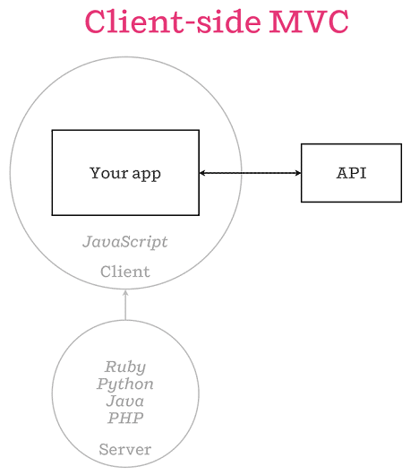

Isomorphic JavaScript applications and .NET
An introduction to isomorphic JavaScript applications with ASP.NET
Who am I?
Babis Karypidis (xabikos)
Freelance Software Engineer focusing on .NET, Azure and React.js
Agenda
- What is isomorphic JavaScript appications and which problem they solve
- Using the mature Reactjs.net for rendering Reactjs applications on the server
- Using the new JavaScript services project that supports server side rendering for multiple libraries/frameworks
What is isomorphic JavaScript appications
-
Isomorphic JavaScript: The Future of Web Apps
One of the first posts that use the term that is still valid (from airbnb)
- It’s the natural evolution of well known Single Page Applications
- It’s the consequence of JavaScript’s tremendous popularity (JavaScript everywhere)
Well known Single-Page app

Isomorphic client server MVC

Issues isomorphic JavaScript appications solve
- Search engine optimization
- Improved performance
- Easier maintenance
Enough with the slides show us some code
Available resources